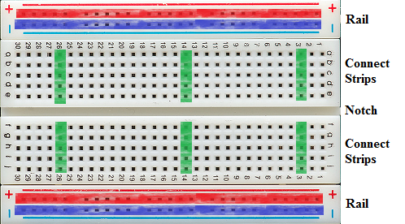
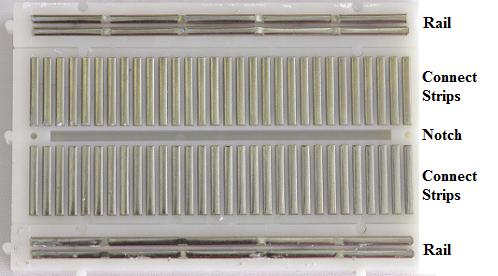
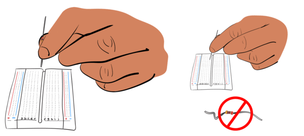
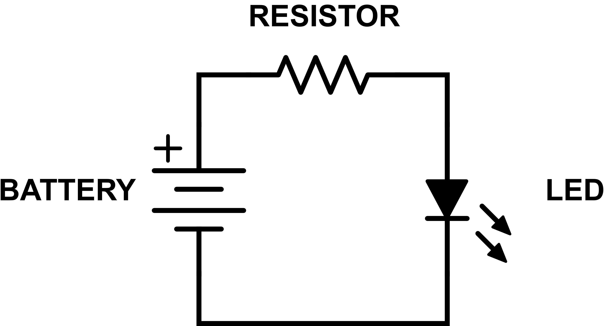

USING THE BREADBOARD
When it comes to building circuits in real life, pinching and holding
wires together with your fingers as we did in the
project isn't very practical.
When building electronics in real life, we often want to first build
temporary circuits that are easy to modify — this lets you "play around" with
the circuit and work out the kinks in your design; then, once you have a
temporary circuit that is working exactly the way you want, you can use the
design as the basis for creating a permanent circuit, which would likely
involve soldering your circuit together (connecting your circuit together
with melted metal or giving a design of your circuit to manufacturing
company to build for you).
One of the most common ways of building a temporary circuit involves the
use of a "breadboard." The name breadboard stems from the fact that early
electronics hobbyists would often use the large wooden boards designed for
rolling out and cutting bread dough to house their temporary circuits.
The breadboards used to build electronics are often called "solderless"
breadboards, which can help avoid confusion when talking to your pastry chef
friends. 😃
Breadboard Layout
Breadboards come in many shapes and sizes, but the fundamental components
will remain the same:

We'll get to the purpose of each of these parts in a moment, but the key
to a breadboard's usefulness is how the various areas are electrically
connected. Those connections are illustrated here — the first picture
indicates which rows and columns of holes are connected together and the
second picture is the inside of the breadboard, so you can actually see
how the connections between holes are made using pieces of metal:
|  |
 |
| Example of Breadboard Connections |
Actual Inside of Breadboard (Bottom View) |
As you can see, each of the two rails consists of two long rows of
connections (a red row in each rail and a blue row in each rail). There are
spaces between the groups of holes in the rail, but the entire row is still
electrically connected as indicated.
In the center of the board, each vertical column of five holes (shown
highlighted in green) is electrically connected together. While we only
highlighted a few columns of five-hole connected strips, in actuality, every
columns of five holes is a connected strip. It's important to note that there
is no electrical connection across the notch.
If you recall from , in order to have a
closed circuit, electric charge must be able to flow from power, through the
circuit, to ground. A breadboard makes it easy to wire a circuit in this
fashion — the rails denote the power and ground of the circuit, while the
rest of the breadboard provides space for your components and the connections
between those components.
When inserting components, like resistors, into the holes of the breadboard, be sure to pinch
the components tightly toward the bottom of the lead (the metal wire part) of
the component (see the diagram below). If you don't, the leads can easily
get bent out of shape!

One last thing to remember — breadboards themselves provide no power. All
they do is allow you to connect components together so that when you
provide power, current will flow from one component to another. Power to a
breadboard can be provided in many different ways, and we'll explore several
of those over the next few projects. As you'll see, most of the project in
this kit will be powered directly from the Raspberry Pi.
YOUR FIRST SCHEMATIC
In the real world, building circuits often starts with a "schematic" for
the circuit. Just like a blueprint tells a builder exactly how to build a
house, a schematic tells an engineer how to build a circuit.
A schematic for a circuit might look something like this:

Looks pretty complicated, huh?
In reality, its pretty straightforward. Let's look at the parts of a
schematic step-by-step...
The Parts & Their Symbols
Schematics use symbols to represent all the common parts you will find in
a circuit. The symbols don't always look like the parts they represent, so
we've provided a little cheat-sheet right here:
|
Battery
|
|
|
Button
|
|
|
Capacitor
|
|
|
Ground
|
|
|
LED
|
|
|
Light Sensor
|
|
|
Lightbulb
|
|
|
Resistor
|
 |
|
Speaker
|
|
|
Transistor
|
 |
You may see some slight variations between how some of these components are
drawn, but if you use the chart above as your reference, you should be able
to figure out these basic components in any schematic.
You'll also notice that in some cases, the symbols may contain (+) and (-)
signs that indicate which side of the part is which — for example, which side
of the battery is the positive (+) side and which is the negative (-) side.
And in some cases, you'll see a number next to a part indicating what size of
that part to use – for example, a resistor may have something like "100 Ω"
next to it, indicating that the resistor should be "100 ohm" in size.
Connecting the Parts
In a schematic, you'll notice that all the parts are attached to each
other by lines. These lines represent the wires through which electric
current in the circuit flows.
Wiring a circuit is as easy as attaching the wires to the parts (and to
each other) as indicated in the schematic. If you can replicate the drawing
using real wires and parts, your circuit will work as expected.
Let's use the following schematic as an example:

Does this look familiar? It is the same circuit from the project
.
Closing the Loop
You probably noticed in our schematic above that the entire
circuit made a loop. This makes sense given our definition of a circuit as
needing to be a closed loop for it to work (remember, in an open circuit,
electric charge can't flow). Conceptually, we can think of the electric
charge as flowing through the circuit starting at the (+) terminal of the
battery and finishing at the (-) terminal of the battery, the ground.
How can a loop have a start?
Above, we said that we can conceptually think of the electric charge as
starting at one point and ending at another. The reason we say
"conceptually" is that, in actuality, the particles that create electric
charge already exist at all points in a closed circuit, so the electric
charge doesn't really "start" at any point. But, since the (+) terminal of the
battery is the highest point of voltage, it's easy to think of the flow
starting there in a circuit diagram.
A good way to think about current flow through a circuit is to assume that
the flow starts at the positive end of a power source and finishes at the
ground of that power source. And in many schematics — like the one we've been
using above — the circuit will appear as a closed loop, starting at one side
of the power source and completing at the other side. While this is how
circuits work, it's not always convenient to draw circuits in a closed loop.
In complex schematics, having to draw everything in a loop can make the
drawings very difficult to follow.
This is why schematics will often separate the two sides of the power
source, with the power source at the top of the schematic and the ground at
the bottom. This convention makes the schematic much simpler to read (and to
write when you're the one creating the schematic).
Let's take a look at how our schematic above would typically be drawn in
the real world:

The circuit that this schematic represents is exactly the same as the
circuit we presented above (the one in the shape of a loop). At the top of
the schematic is the power source — indicated by the "3.3V". Just like in our
previous schematic drawing, the power source is connected to the resistor,
which is then connected to the LED.
In this schematic diagram, the other lead of the LED doesn't loop back to
the power source, but instead connects to a symbol that represents "ground."
In the real world, the circuit would connect back to the (-) side of the
power source (which is ground), but in the diagram, the power and ground are
separated to make the diagram simpler and easier to read.